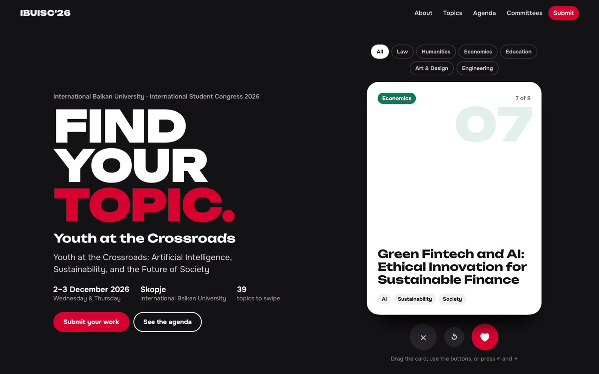
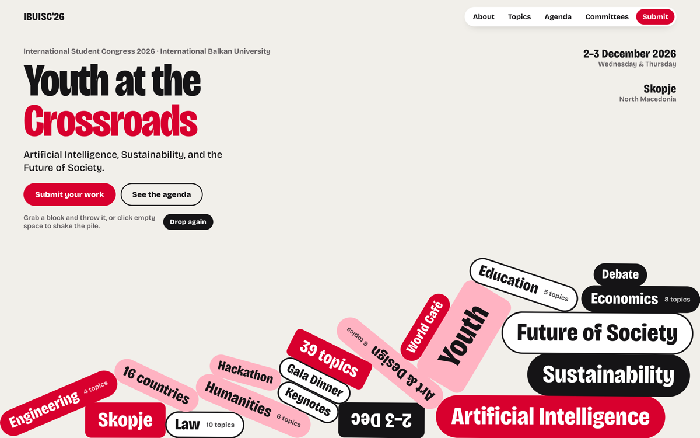
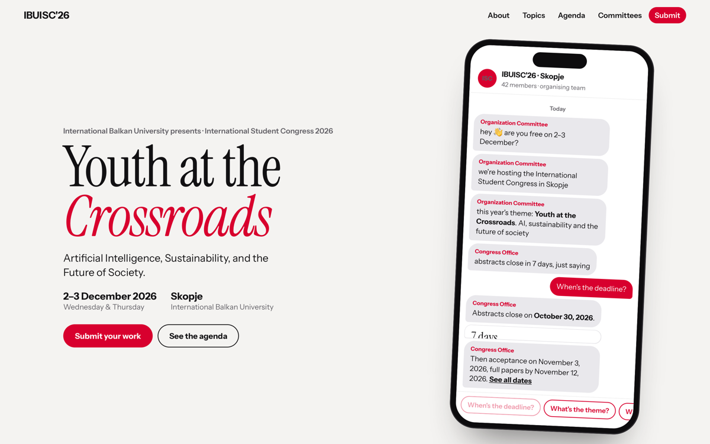
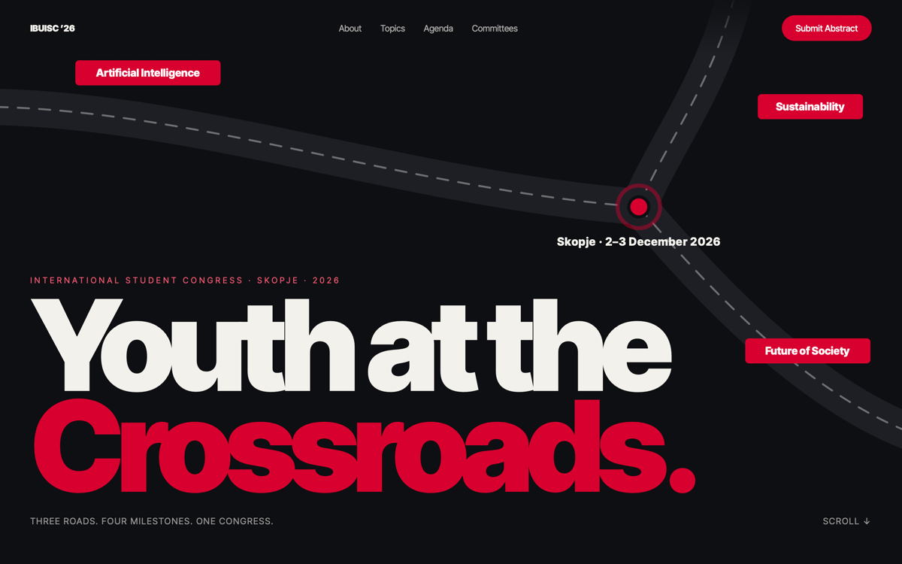
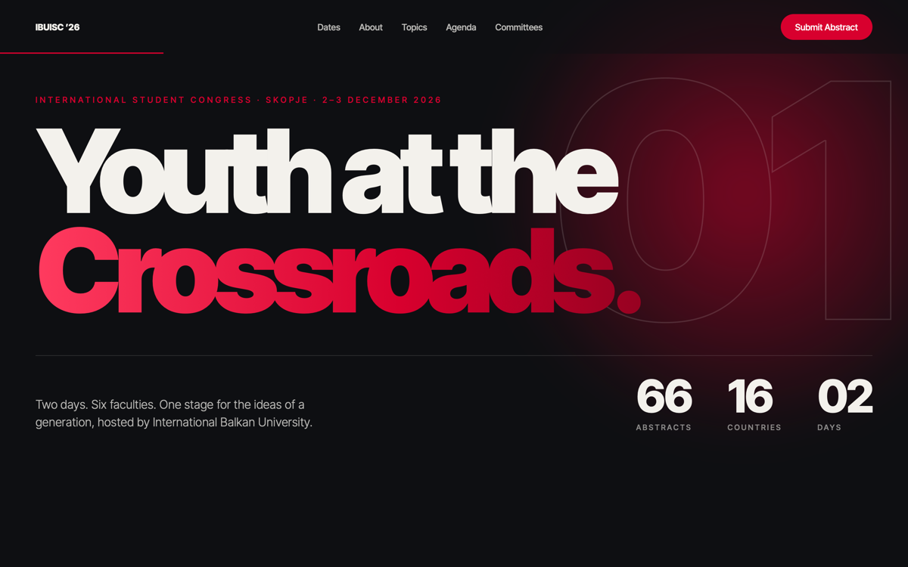

Concept 1 · reply with “1”
Match
Students find their research topic the way they already find everything else: by swiping. Every one of the 39 congress topics is a card.
Try it
- Drag a card to the right (or press ♥) to see the “It's a match” screen.
- Press “Submit on this topic”: the form further down fills itself in.
- Filter the deck by faculty at the top of the deck.

Concept 2 · reply with “2”
Drop
The themes, faculties, dates and sessions fall into the opening screen as solid blocks with real physics. A playful, memorable first impression that still states every key fact.
Try it
- Watch the blocks fall when the page opens.
- Grab a block and throw it; on a phone, drag it with your finger.
- Press “Drop again” to replay.

Concept 3 · reply with “3”
Group Chat
The organising team writes to the visitor in a group chat on a phone. It speaks the language of students, and every answer comes from the real congress information.
Try it
- Wait a few seconds for the first messages.
- Tap “When's the deadline?” under the chat: a live countdown answers.
- Tap a link inside the chat to jump to that part of the site.

Concept 4 · reply with “4”
Youth at the Crossroads: The Road
The theme drawn literally: three roads (AI, sustainability, society) meet at a junction in Skopje. Scrolling then travels sideways along the road through the four deadlines.
Try it
- Watch the three roads draw in and meet.
- Scroll down: the page moves sideways through the deadlines, each with a live countdown.
- Continue into the full site below.

Concept 5 · reply with “5”
Cinematic Chapters
The site is told like a film in numbered chapters, with large type, chapter numbers and a reading-progress bar. The most classic and confident of the five.
Try it
- Scroll slowly: chapter titles rise into view and the red bar fills.
- Point at a faculty in chapter 02 to preview its topics.
- Click it to open that faculty further down.